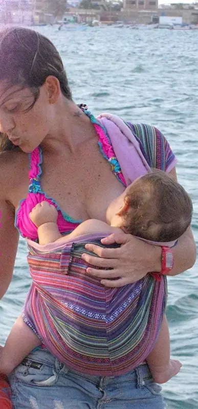
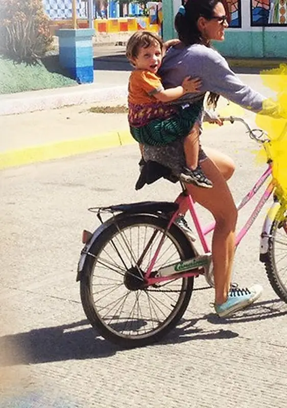
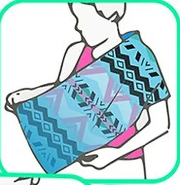
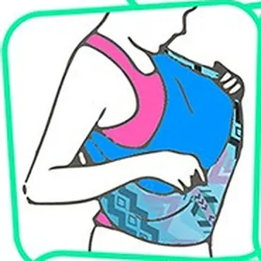
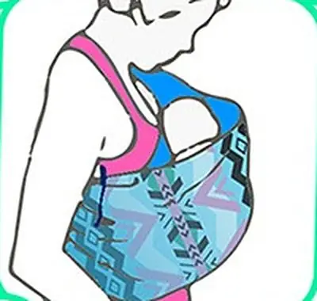
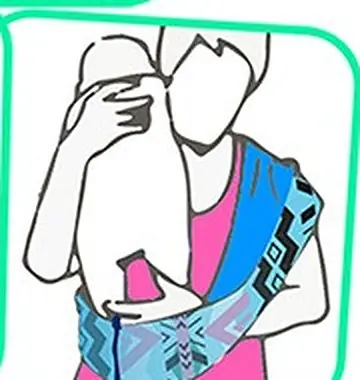
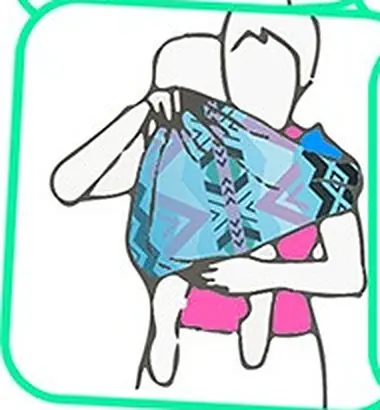
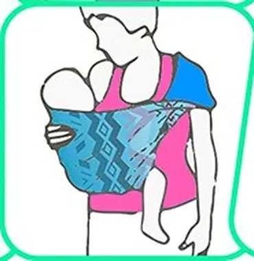
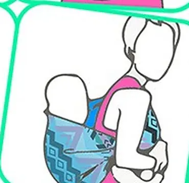
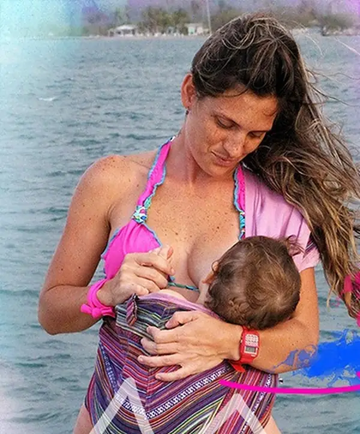

Cómo se usa
Cuatro posiciones, cada una desde su edad. Lea el paso a paso y las normas para recién nacidos antes de usarla.

Las cuatro posiciones

De 0 a 3 meses
Encunada
Para bebés de más de 3,5 kg que aún no sostienen la cabecita. El bebé va recostado, como en una cuna, y el acolchado le sirve de rebozo para la cabecita.
Preguntar por esta posiciónA partir de los 3 meses
Ranita al frente
O cuando el bebé ya sostiene la cabecita. Va sentado de frente a usted, con las piernas adentro o afuera.
Preguntar por esta posición
A partir de los 6 meses
Ranita a la cadera
El bebé va sentado a un lado, sobre su cadera.
Preguntar por esta posición
A partir de los 10 meses
Ranita a la espalda
El bebé va atrás, en su espalda.
Preguntar por esta posiciónPaso a paso

1
2
3
4
5
6
7
Bebés de más de 3,5 kg y menores de 3 meses
O que aún no sostienen la cabecita.
- Doble la Hoku Hamaquita por la mitad a lo largo, dejando la etiqueta hacia abajo.
- Colóquesela tipo bolso: que recaiga en un hombro y el brazo contrario salga.
- Verifique que la tela que queda por dentro esté bien pegada a su pecho y que se forme una bolsita para meter al bebé.
- Meta al bebé, sosteniéndolo por abajo, y verifique que la tela de adentro siga pegada a su pecho y no se ruede hacia abajo.
- Cuando el bebé esté adentro y verifique que la posición es la correcta (vea las normas para recién nacidos), puede soltar las manos.
- En posición encunada, la etiqueta queda a un lado y el acolchado sirve de rebozo para la cabecita.
Bebés de más de 3 meses
O que ya sostienen la cabecita solos.
- Repita los pasos 1 y 2 de los bebés menores de 3 meses.
- Meta al bebé por arriba de la hamaquita: la etiqueta queda en la parte de arriba de su espaldita y el acolchado justo detrás de sus rodillas.
- El otro acolchado va en el cuello o el hombro de quien portea.
- La tela de la hamaquita debe quedar a la altura de los hombros del bebé.
- Verifique que la posición sea la correcta (vea el porteo ergonómico).
Porteo ergonómico
En la Hoku Hamaquita el bebé va erguido y pegado a quien lo portea, en «posición ranita»:
- Espalda en forma de "C", como en el vientre de mamá.
- Todo el peso recae sobre su pompis.
- Piernas flexionadas, con las rodillas a la altura de su ombligo, formando una "M".
La ranita se usa a partir de los 3 meses, o cuando el bebé ya sostiene su cabecita. De 0 a 3 meses se usa en posición encunada.

Con recién nacidos
Lo más importante es que el bebé tenga suficiente espacio para respirar. No seguir estas normas puede ser dañino o mortal, igual que con cualquier portabebés:
- La barbilla del bebé no debe quedar doblada contra su pecho, porque puede cerrar sus vías respiratorias. Siempre debe haber al menos un dedo de espacio bajo la barbilla.
- La cara del bebé nunca debe quedar presionada contra la tela. Si a usted le cuesta respirar a través de una tela, a su bebé también.
- La cara del bebé no debe quedar presionada contra el cuerpo de quien lo porta: manténgala alzada mientras no esté tomando pecho. Mientras toma pecho, asegúrese de que su nariz no quede tapada.
- Los bebés que nacen con bajo peso (menos de 2,50 kg) o prematuros pueden tener problemas respiratorios y bajo tono muscular. Es mejor esperar a que alcancen los 3,5 kg antes de llevarlos en una Hoku Hamaquita.
Revise su respiración a menudo
Un recién nacido, un prematuro o un bebé con bajo tono muscular puede no quejarse si le cuesta respirar. Señales: respiración rápida o agitada, gruñidos o suspiros con cada respiración, o inquietud. Si las nota, recolóquelo.
Un truco de la guía
Si siente al recién nacido muy abajo, colóquele una mantica o sabanita dobladita debajo para que suba un poco.
Dos bebés a la vez
Después de los 3 meses, cuando ya sostengan bien la cabecita, puede portear a dos: una Hoku Hamaquita en cada hombro y cada bebé en la suya.

La guía completa
Todo el paso a paso, con fotos, en un PDF para descargar.
Enlace por confirmar: aquí irá la guía nueva de Hoku.